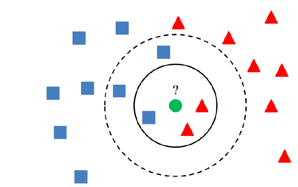

KNN a supervised learning technique-based machine learning algorithm. KNN is a popular classification algorithm. It may be used for both classification and regression. It is important to choose the k parameter as precisely as possible in order for this algorithm to produce a successful result. KNN is a non-parametric algorithm that makes no assumptions about the data. The lazy learner algorithm often used in KNN. Because learning does not occur immediately after the collection of training data. Instead, it saves the data and then analyzes it when it’s time to classify it. It may be used to issues like the likeness criterion.
So, why the KNN algorithm required? Assume there are two categories. Let’s say we wish to add a new point to the coordinate system, in addition to the two classes we already have. The KNN algorithm may be used to determine which class this point belongs to. The distances usually calculated using the Euclidean distance formula. The new point’s distance from other points calculated, and the class with the shortest distance included in that class.

Working stages of the KNN algorithm as follows:
1. The K parameter has been chosen.
2. Distances in Euclidean space computed.
3. K is the nearest neighbour, according to the determined Euclidean distance.
4. The additional new point is put in the class with the greatest number of neighbors.
So, what factors should be taken into account while determining the k parameter? Because there is no one-size-fits-all method for determining the ideal value for parameter K, we must experiment with several options to discover the best one. K values of 3 and 5 are the most popular. If the K parameter is set to a low value, the data may contain noisy data. Some difficulties may arise even if the K value is set too high. However, in general, it is better to choose big numbers.
Let’s take a look at the KNN algorithm’s benefits. It’s easy to set up and more resistant to noisy data. Additionally, success rises while dealing with massive data. So, what are the disadvantages? The parameter k, which can be complicated, must always be chosen. Additionally, since the distance calculation will be performed using all of the data, the calculation cost will be high.
You can find a lot of information on the subject here.
Please click for more information.